Geometric and expressive abstract works
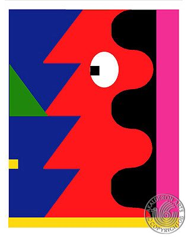
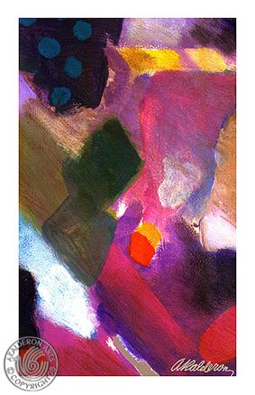
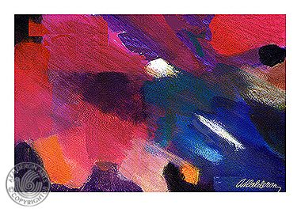
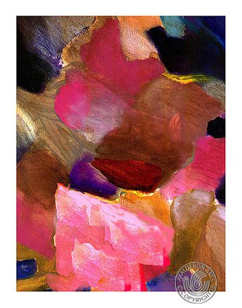
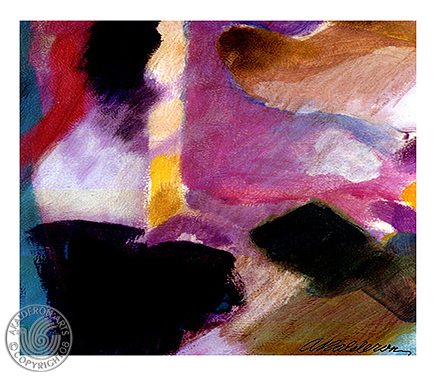
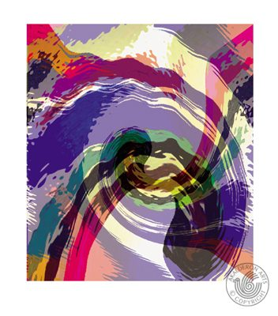
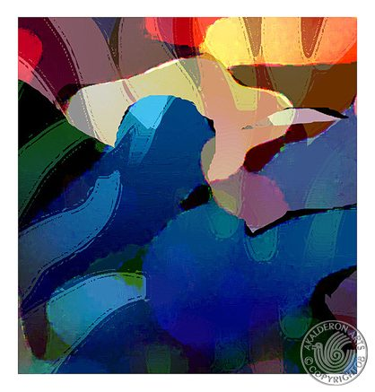
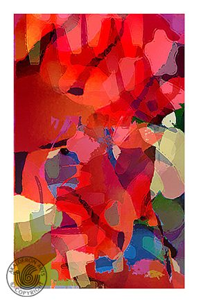
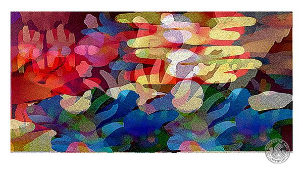
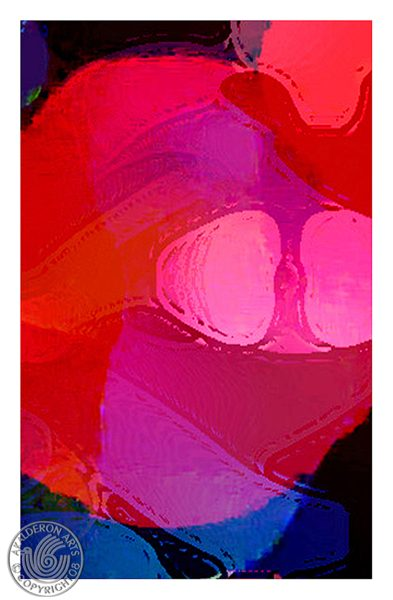
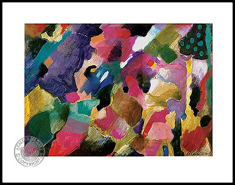
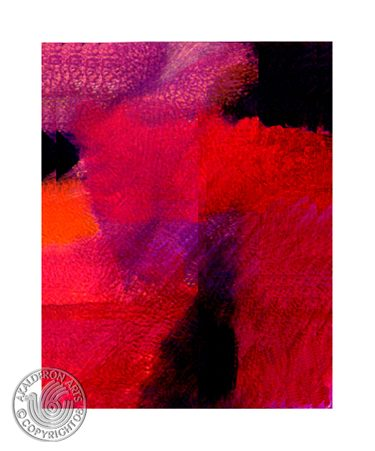
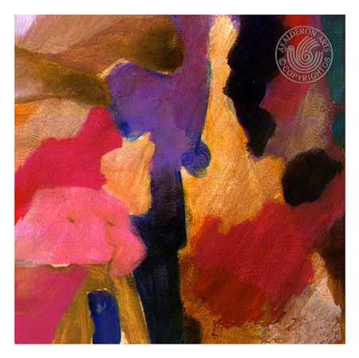
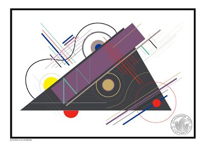
Space, cosmic energy and celestial forms
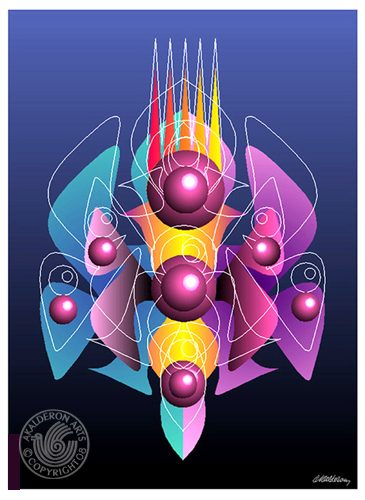
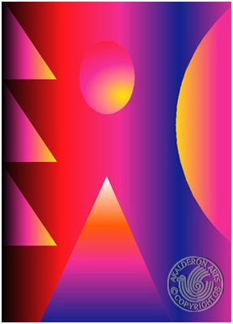
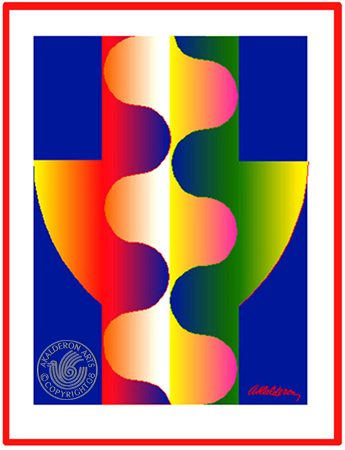
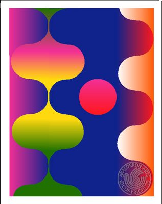
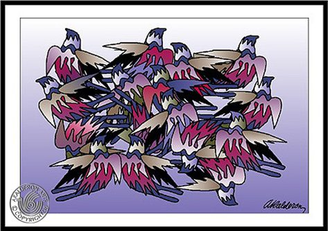
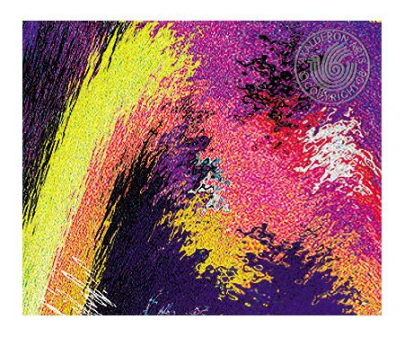
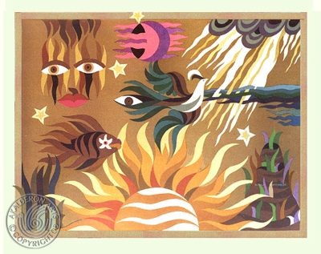
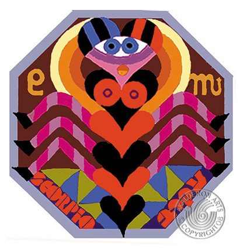
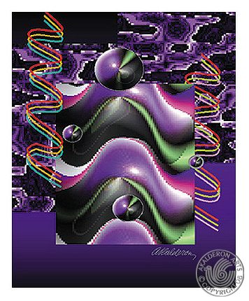
A lyrical journey through the four seasons
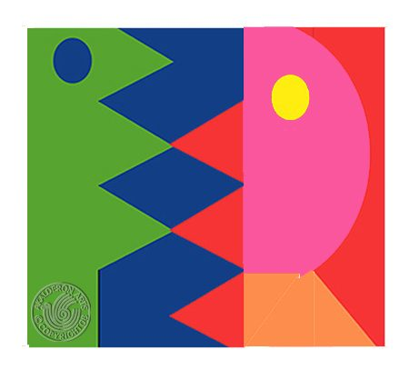
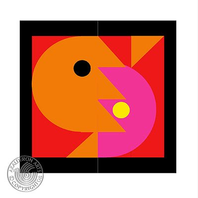
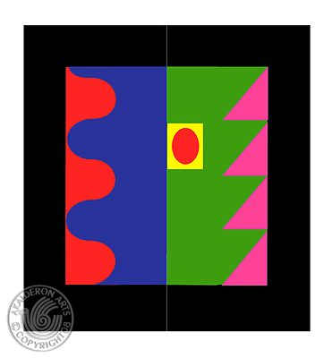
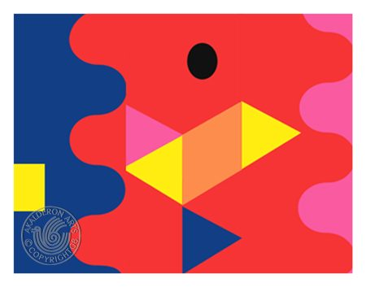
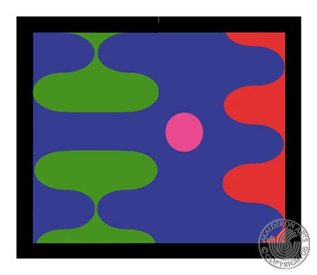
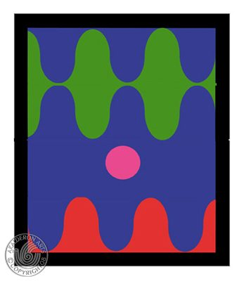
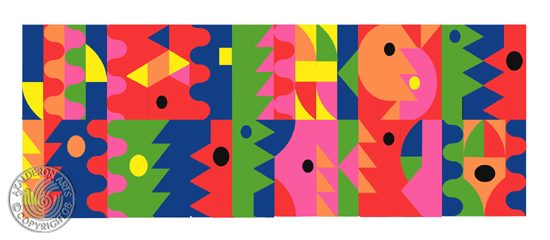
Human form, narrative and emotion
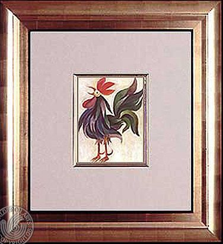
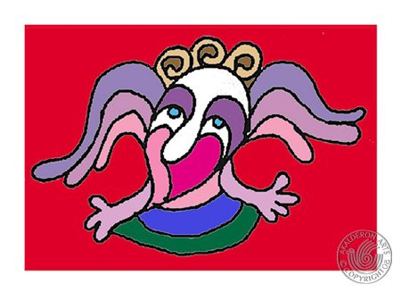
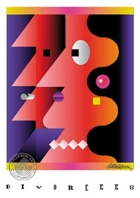
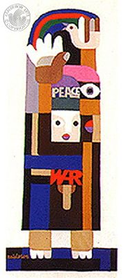
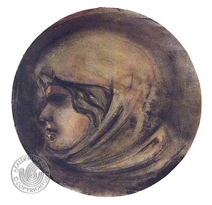
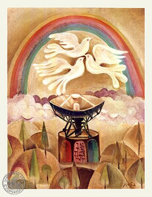
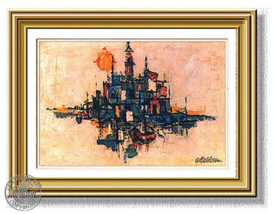
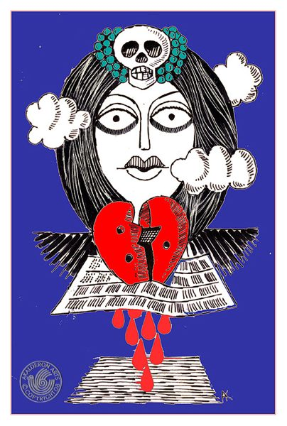
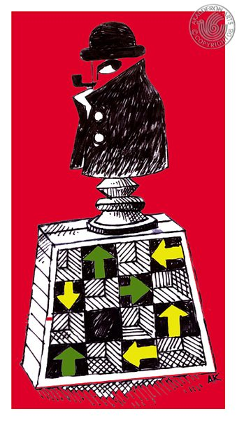
Three-dimensional works and kinetic art
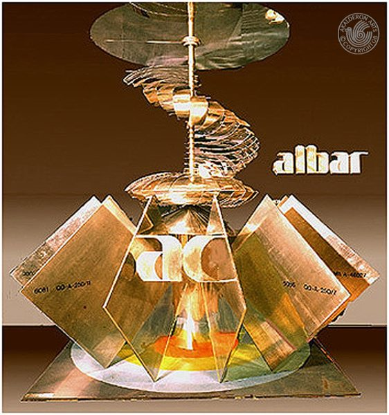
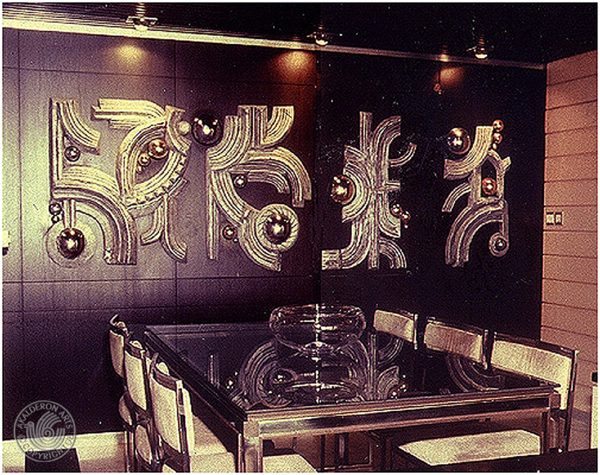
Art in context — paintings and prints designed for interior spaces, from living rooms and offices to hotels and restaurants.
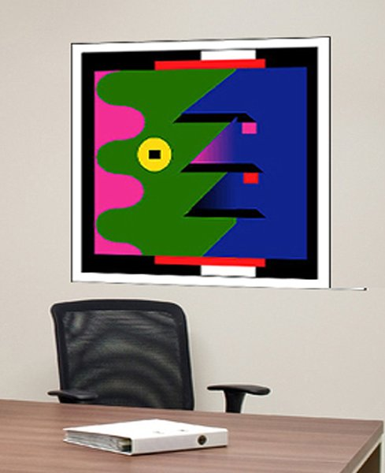
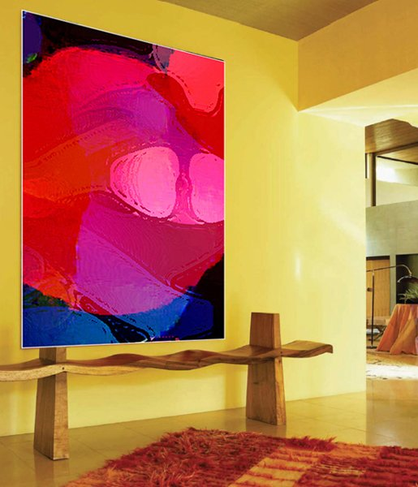
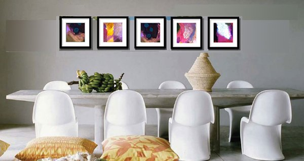
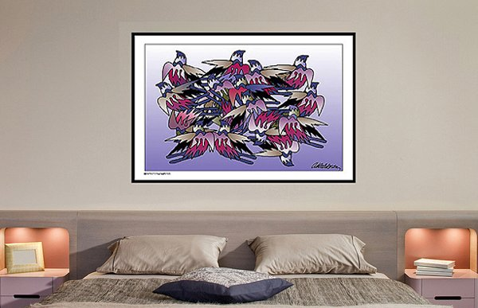
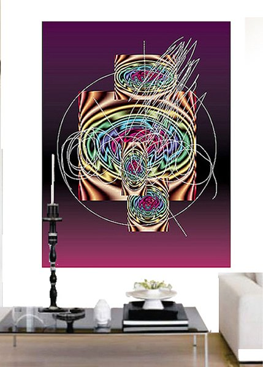
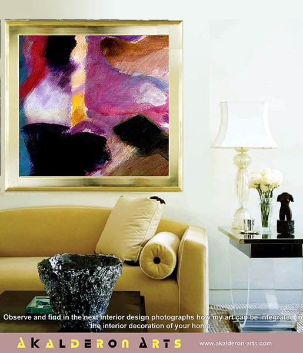
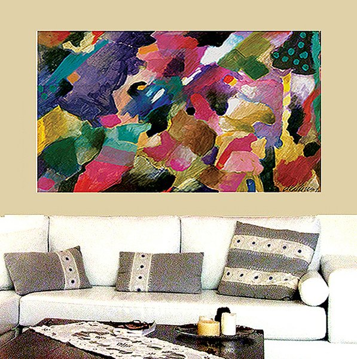
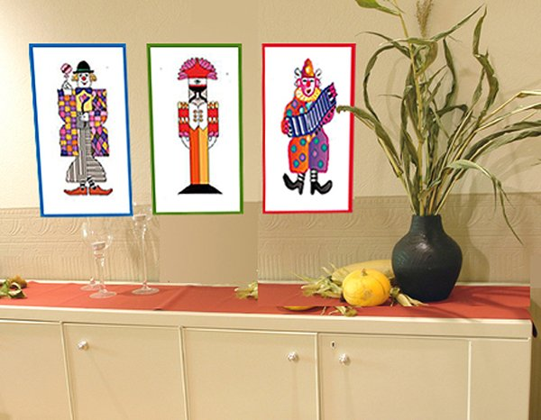
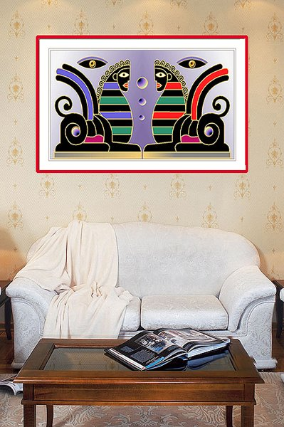
Hand-woven tapestries spanning biblical narratives, figurative art, peace themes and the zodiac — a unique textile medium in Kalderon's portfolio.
Scenes from the Hebrew Bible — the Creation, the Flood, the Matriarchs and Kings
Human figures, portraits and symbolic compositions woven in thread
Works of peace, Shabbat, love and spiritual themes
The signs of the zodiac rendered in tapestry — a unique celestial series
A deeply personal series dedicated to Jerusalem — prints, paintings and visual poems celebrating the eternal city.
Prints, paintings and visual poems dedicated to Jerusalem — the eternal city.